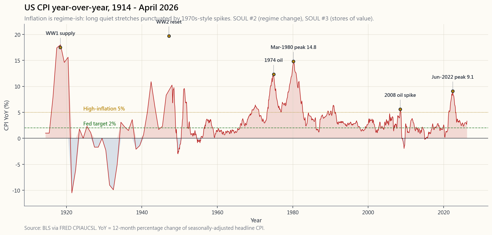
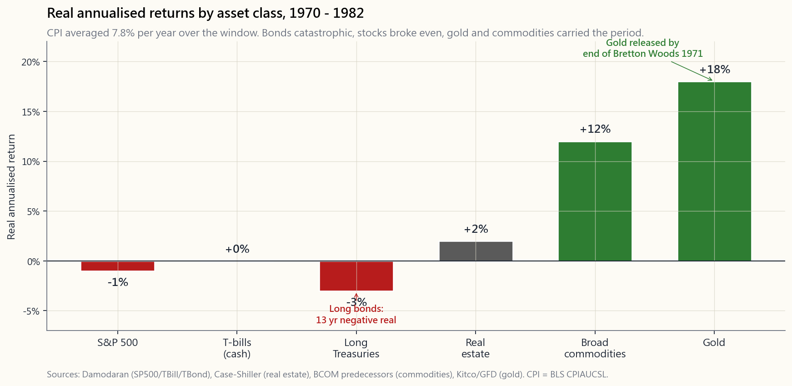

Side Lesson 06: Inflation — What Kills Cash, and What (Sometimes) Protects You
1. Why This Is Important
Every other risk in this tutorial — drawdowns, default, volatility, correlation breaks — announces itself. Inflation does not. Inflation is the only risk that bills you continuously, in a unit (purchasing power) that does not appear on any account statement and that no broker sends you a 1099 for. You can lose half of your real wealth to a fifteen-year inflation regime and never see a single negative number on a brokerage screen.
Three things make this lesson worth a full side slot rather than a paragraph stapled into the bond chapter:
live worst-case for every retirement plan.** US headline CPI peaked at 14.8% in March 1980; the real (inflation-adjusted) S&P 500 delivered roughly minus-50% from the 1968 high to the 1982 low. The nominal index was flat over fourteen years. Anyone who measured their wealth in dollars looked fine. Anyone who measured it in groceries was getting destroyed.
only history.** US headline CPI hit 9.1% in June 2022 — a forty-year high. Long-duration Treasuries fell about thirty per cent peak to trough. Gold, which the textbooks promised would protect you, did nothing in the first year of the spike. Most of the inflation playbook the post-2008 generation had memorised was wrong.
the ranking everyone over-fits to.** Bonds, the "safe" leg of the 60/40, are catastrophic. Stocks are weak in real terms because margins compress. Gold is unreliable — sometimes magnificent (1971–1980), sometimes useless (2022). Commodities and real estate are decent. TIPS are the one mechanically-reliable hedge. Cash is the guaranteed loser. These act as "stores of value" — but a store of value is whatever the next generation believes is one, which is why the answer rotates.
The goal of this side lesson is to give you the half-dozen numbers and the one regime-change frame — inflation regimes can flip on a forty- year timescale — that turn inflation from a vague fear into a sized, hedgeable risk in the four-tranche portfolio.

2. What You Need to Know
2.1 CPI vs PCE vs Core — the Three Numbers That Aren't the Same
The headline number you see in the news is CPI (Consumer Price Index, published by the Bureau of Labor Statistics). The number the Fed actually targets is core PCE (Personal Consumption Expenditures ex-food-and-energy, published by the BEA). They disagree, persistently, by about 30–50 basis points per year, and the difference matters.
CPI uses a fixed basket updated every two years; PCE re-weights the basket every quarter to follow what households actually buy. When beef gets expensive, CPI keeps pricing the old basket and reports a higher number; PCE notices that consumers switched to chicken and reports a lower one. PCE also has a much larger healthcare weight (because it includes employer-paid insurance) and a smaller housing weight.
Then there is "core" — the same index minus food and energy, the two most volatile components. The Fed targets core because it tells you the trend signal; the news reports headline because it tells you what the voter feels at the gas pump. Both numbers are real; both matter; they are answers to different questions.
The third measure worth knowing is trimmed-mean PCE (Dallas Fed), which throws out the most extreme components in each direction every month. It moves slowest of all and is the cleanest read on the underlying drift. In April 2026, with headline CPI around 3.2%, core PCE around 2.8%, and trimmed-mean around 2.6%, the Fed is comfortable; in mid-2022, with all three pinned above 5%, it was not.
The investing point: **never compare a real-return number quoted in CPI terms to one quoted in PCE terms without adjusting**. Damodaran's historical equity premium is a CPI-deflated series. The Fed's preferred inflation chart is PCE-deflated. They will be off by 0.4% per year over multi-decade windows — a real difference at twenty-year compounding.
2.2 The 1970s — the Canonical Inflation Trauma
The single regime every long-horizon investor should be mentally calibrated against is the 1970s United States. The reason it shows up over and over in this tutorial is that it broke every prevailing asset-allocation orthodoxy of the day in a way that the 2008 financial crisis and the 2020 COVID crash did not.
The numbers, in round form: headline CPI averaged 7.8% per year from 1970 through 1982. It peaked at 14.8% in March 1980 (that is the single data point Volcker pinned his entire chair to). The S&P 500 returned about 6% per year nominally over the period; subtracting inflation leaves roughly a minus-2% real return, with a peak-to-trough real drawdown of about minus-50% from the 1968 high to the 1982 low. Long Treasuries lost about 3% per year in real terms — fifteen consecutive years of negative real fixed-income returns. The "balanced" 60/40 portfolio that defines the modern retirement default delivered roughly zero real return for the entire decade.
Two assets won. Gold, freed from the 1971 dollar peg, ran from $35 to $850 — about an eighteen-per-cent annual real return over the twelve years. Commodities broadly returned 12–13% per year real. Both were emerging from a regime where they had been suppressed (gold by Bretton Woods, commodities by post-war price controls), which is exactly the classic forty-year-regime-change set-up: when a regime breaks, the asset that gets re-rated is the one that was forced to be cheap under the old regime.
That last point is the trap. The 1970s gold story is not "gold protects against inflation". The 1970s gold story is "gold got out of jail the year inflation started". When inflation came back in 2022 with no similar regime breakage in the gold market, gold *did nothing in the first year*. The cleaner frame: a store of value is whatever the next generation believes is one. In 1972 that was gold. In 2022 it was, briefly, Bitcoin (then it wasn't). The mechanism is *belief re-rating*, not metal.
2.3 The 2021–2022 Spike — What the Modern Playbook Got Wrong
Headline US CPI hit 9.1% in June 2022, the highest reading since November 1981. Three things made it different from the textbook inflation chapter that most active investors had been working from:
First, **bonds were destroyed in the conventional way the textbook predicts** — long Treasuries (TLT) fell about 31% peak to trough, the worst calendar year for the asset class on record. That part of the playbook worked. The 60/40 portfolio lost about 17% in real terms, which is its worst real-return year in modern history.
Second, **stocks fell with bonds, breaking the "stocks-and-bonds-are-a hedge" assumption that had defined the 2009–2021 regime**. The stock-bond correlation flipped from negative (the post-2000 default) to positive (the pre-2000 default, which is also the inflation-regime default). The diversification benefit of 60/40 disappears precisely when you need it. The vol tail wags the dog.
Third, gold did not work — at least not in 2022. With the 10-year real yield rising from minus-1% to plus-2%, the opportunity cost of holding a non-yielding metal soared, and gold finished 2022 essentially flat in nominal terms — meaningfully down in real terms. The 1970s playbook of "inflation = buy gold" failed in its first live test in forty years. Gold did eventually rerate, in 2024–2025, but the investors who had bought it in 2021 specifically as inflation insurance sat through three years of carrying cost first.
What did work in 2022: short-dated TIPS, broad commodities (the Bloomberg Commodity Index returned about +14% on the year), oil producers, and certain pockets of real estate where rents reset quickly. What did not: long bonds, long-duration tech, fixed-rate mortgages bought in 2021 at 3% (these were a fantastic liability but a terrible asset), and gold-as-inflation-hedge.
2.4 Asset Performance Under Inflation — the Honest Ranking
Pull together the 1970–1982 record (the long inflation regime), the 2021–2023 spike (the short inflation regime), and the academic real-return literature. The honest ranking, expressed as approximate real annualised return during high-inflation regimes:
- TIPS / inflation-linked bonds: roughly 0% real, *guaranteed by
- Commodities (broad index): historically +6–12% real during
- Real estate (direct, not REITs): +0–4% real, with large
- Gold: mixed. +18% per year real in 1970–1980; roughly 0% real in
- Stocks: weak in real terms during the spike (margin compression),
- T-bills (cash): approximately 0% real if the Fed is hiking
- Long Treasuries: the worst major asset class. Roughly minus-3%
The line that captures it: **inflation is the one regime where the "safe" leg of every textbook portfolio is the leg that gets you killed, and the "risky" leg (real assets) is what saves you**. The barbell stance and the four-tranche stack with an explicit Stores-of-Value sleeve are designed for exactly this.

2.5 Wages Lag Prices, Geography Disperses Both
Two micro-mechanics every investor should internalise before designing an inflation hedge.
Wages lag prices by twelve to eighteen months. The 2021–2022 inflation spike pushed CPI to 9.1% in June 2022; nominal hourly earnings did not catch up until late 2023. The implication for an investor is that real wages fall during the early innings of an inflation regime — that is the period when consumer-discretionary companies miss earnings, and when the "consumer-staples-as-defensive" trade actually works, because households cut back on the marginal purchase first. The implication for an employee (which most investors also are) is that your real income is contracting even as the news talks about "resilient consumer spending." Plan accordingly: ratchet your savings rate up during the spike year, before your nominal salary catches up.
Geography matters more than the headline number. US headline CPI was 9.1% in June 2022; that single number averaged a Phoenix housing market growing 30% year-on-year against a San Francisco market that was falling. In the 1970s, energy-producing regions (Texas, Alberta) had positive real wage growth; manufacturing belt regions (Detroit, Cleveland) had real wage growth that was meaningfully more negative than the national figure. Regional dispersion in housing inflation, healthcare inflation, and wage inflation is now several times the size of any year-on-year change in the national headline number. The practical takeaway: the inflation rate that affects your portfolio plan is your local CPI, not the federal print.
The interactive panel at the bottom of this lesson (side06_inflation_lab)
lets you set a personal inflation rate and watch what it does to your
real ending wealth across an arbitrary mix of stocks, bonds, gold,
commodities, real estate, TIPS, and cash. Before you decide that 2% CPI
"doesn't matter," set the slider to 4% and let it run thirty years.
3. Common Misconceptions
a national average across an urban basket. Your personal inflation rate depends on your housing situation, your healthcare exposure, and your geography, and can easily run two to three percentage points above or below the national figure for years.
weakly. During the spike phase of an inflation regime, stocks lose in real terms (margin compression, multiple compression as discount rates rise). The hedge story works if you can hold for fifteen-plus years through the spike, the rollover, and the post-inflation recovery. Most investors cannot.
inflation in the 1970s because it had been forcibly suppressed by the Bretton Woods peg until 1971 and was getting re-rated. That re-rating happened to coincide with inflation. In 2022, gold did nothing for twelve months while CPI ran at 9%. Treat gold as a belief asset, not as a mechanical hedge.
real yield you bought them at, plus CPI adjustments. If you buy TIPS at minus-1% real (which was the case for most of 2020–2021), you are guaranteed minus-1% real even during an inflation spike. The timing of when you buy matters as much as which asset you buy.
eighteen months in every documented inflation episode. Your real take-home pay falls during the first year of any spike, regardless of nominal raises.
regime where inflation runs above the T-bill rate. In 2021, that gap was about 6%; cash holders lost six per cent of real wealth in twelve months while feeling perfectly safe.
Five per cent annual inflation for ten years halves your purchasing power. You do not need Weimar; you need a slow steady regime change.
1970s by hiking the funds rate to 19% in 1981 and inducing a deep recession. That fix took fifteen years and two recessions. "The Fed will fix it" is a long-horizon statement, not a portfolio one.
rents reset faster than financing costs and if the local supply is constrained. Where supply is unconstrained (much of the US sun belt) and rates rise sharply, real estate can fall in real terms even during a CPI spike.
in 2022. Bitcoin fell about 65% from peak to trough in the same year CPI hit 9.1%. Whether or not it eventually becomes a store-of-value asset, the 2022 episode is the one and only out-of-sample test it has had so far, and it failed. Belief asset, not mechanical hedge.
4. Q&A
**Q: What is the simplest portfolio change a normal investor should make to be inflation-prepared?** A: Move some of the bond allocation from nominal Treasuries (TLT, IEF) to short-dated TIPS (VTIP, STIP). VTIP is a one-line trade, has no duration risk, and locks in whatever real yield is being offered. In April 2026 that is roughly +1.5% real, which is a perfectly serviceable inflation hedge.
Q: Why TIPS instead of gold? A: TIPS pay you the actual CPI print, by contract, on top of a known real yield. Gold pays you whatever the next generation decides to pay for it, which is structurally a belief bet on what the next generation treats as a store of value. For the part of your portfolio that is supposed to guarantee inflation protection (typically the bond sleeve), TIPS are the right answer. Gold belongs in the Stores-of-Value tranche, sized at five to ten per cent.
Q: Why didn't the 60/40 work in 2022? A: The 60/40 relies on stocks and bonds being negatively correlated. That correlation has historically been positive during inflation regimes (1970s) and negative during deflation/disinflation regimes (2000s and 2010s). In 2022, inflation broke the post-2000 negative correlation, both legs fell together, and 60/40 had its worst real year on record. The regime change is the risk.
Q: Should I have predicted 2022 from the 2021 money supply data? A: M2 grew about 26% from February 2020 to February 2021 — the largest single-year jump since World War II. That was a real signal. The post-2008 episode of similar QE did not produce CPI inflation, because banks parked the reserves rather than lending them out. So the M2 signal had a 14-year track record of false positives before the 2021 true positive. "Predict it from M2" is hard precisely because the transmission depends on the velocity of money, which depends on behaviour. Hedge structurally rather than predict.
Q: What is the difference between TIPS and I-bonds? A: I-bonds are US Treasury savings bonds with a fixed real coupon plus the CPI adjustment, capped at $10,000 per person per year, with a one-year lockup and a five-year early-redemption penalty. They are better than TIPS within that cap (you typically get a slightly higher fixed real rate, and the tax treatment is friendlier). TIPS scale to unlimited size and trade on the open market. The right answer for most households is both: max out I-bonds first, then layer TIPS on top.
Q: How did the 1970s end? What signal flipped it? A: The 10-year Treasury yield peaked at 15.8% in September 1981. The fed funds rate peaked at 19%. Volcker held those levels through two recessions until inflation expectations broke. The investing signal that the regime had flipped was the bond market: long bonds rallied violently in late 1981 as the market priced in lower future inflation, and that rally turned into a forty-year bull market in fixed income that ended only in 2021. The framing: you are not betting on inflation; you are recognising that you live inside a regime, and you should know what would mark the next regime flip.
Q: Are TIPS taxed weirdly? A: Yes — and badly. The CPI adjustment to principal is taxed as ordinary income in the year it accrues, even though you do not receive the cash until the bond matures. This is called "phantom income." The honest answer for most households is: hold TIPS in an IRA or 401(k) (where the phantom income does not matter), and use I-bonds for the taxable account. Location-not-allocation applies cleanly here.
Q: What about real estate as an inflation hedge? A: Direct real estate (your house, a rental property) is a decent inflation hedge if you own it with a long-duration fixed-rate mortgage. In that configuration, you are short cash and long the underlying real asset; inflation erodes the liability while the asset keeps pace. Public REITs are worse — they trade like long-duration bonds and got hit in 2022 along with the rest of the rate-sensitive complex. The 1970s playbook of "real estate hedges inflation" is about the direct version, not the REIT version.
Q: How much of my portfolio should be in inflation hedges? A: For a default investor with a thirty-year horizon: 5–10% TIPS or I-bonds in the bond sleeve, 5% gold or commodities in the Stores-of- Value sleeve, and a deliberate tilt toward companies with pricing power (consumer staples, energy, infrastructure). This is the side-of-the-barbell that gets activated in a regime change rather than the side that holds index funds during normal regimes. Sized small; sized always.
Q: Should I just buy a "real assets" ETF and be done with it? A: Maybe. Funds like RAAX, INFL, or PRPFX bundle commodities, precious metals, energy infrastructure, and TIPS into a single ticket. They are reasonable for someone who does not want to manage the parts individually. Read the holdings sheet before you buy: some "inflation ETFs" are 60% energy stocks, which is mostly an oil bet, not an inflation bet.
Q: When is the inflation lab interactive useful? A: When someone tells you "2% inflation doesn't matter," push the slider to 4% for thirty years and show them the real-wealth difference. When someone tells you "I'm safe in cash," set inflation to 4% and their real wealth shrinks by 70% over thirty years. The lab is built to make purchasing-power decay legible at the scale at which it actually operates — which is geological, not weekly.
附加課06：通脹——殺死現金的元兇，以及（有時）保護你的資產
1. 為何此課題值得重視
本教程所涵蓋的其他風險——回撤、違約、波動性、相關性崩潰——都會自我揭示。通脹則不然。通脹是唯一一種以持續方式向你收費的風險，計費單位是購買力，而購買力既不會出現在任何賬戶結單上，也不會有任何經紀向你發出相關通知。一段為期十五年的通脹週期可以蠶食你一半的真實財富，而你在券商平台上卻看不到任何一個負數。
以下三點說明了為何此課題值得獨立成一節，而非只是附在債券章節末尾的一段話：
本附加課的目標，是為你提供幾個關鍵數字，以及一個理解通脹週期的框架——通脹週期可以在四十年的時間跨度上發生根本性轉變——從而將通脹從一種模糊的恐懼，轉化為四組合投資組合中一個可量化、可對沖的風險。
2. 你需要掌握的知識
2.1 CPI、PCE與核心通脹——三個並不相同的數字
你在新聞中看到的數字是CPI（消費者物價指數，由勞工統計局公布）。美聯儲實際盯住的目標是核心PCE（個人消費支出指數剔除食品及能源，由經濟分析局公布）。兩者長期存在分歧，每年相差約30至50個基點，而這差異舉足輕重。
CPI採用每兩年更新一次的固定籃子；PCE每季重新調整籃子權重，以追蹤家庭的實際消費行為。當牛肉價格上漲，CPI沿用舊籃子，報告出更高的數字；PCE則觀察到消費者已轉向雞肉，報告出較低的數字。PCE的醫療保健權重也遠高於CPI（因為它涵蓋僱主提供的保險），住房權重則較低。
然後是「核心」通脹——同一指數剔除食品及能源這兩個最不穩定的組成部分之後的數字。美聯儲盯住核心通脹，因為它反映的是趨勢信號；新聞報道整體通脹，因為它反映的是選民在油泵前的切身感受。兩個數字都是真實的；兩個都重要；但它們各自回答不同的問題。
第三個值得關注的指標是截尾均值PCE（達拉斯聯儲），它每月剔除漲幅和跌幅最極端的組成部分。這個指標的波動最慢，是反映底層通脹趨勢最清晰的讀數。2026年4月，整體CPI約為3.2%、核心PCE約為2.8%、截尾均值約為2.6%，美聯儲對此感到滿意；而在2022年中，三個指標均企於5%以上時，美聯儲則高度警惕。
從投資角度而言：切勿在未作調整的情況下，將以CPI計算的實際回報數字與以PCE計算的數字直接比較。 Damodaran的歷史股票溢價是以CPI平減的數據；美聯儲偏好的通脹圖表則以PCE平減。在二十年的複利計算中，兩者每年相差0.4%——在長期複利計算下，這是真實且顯著的差距。
2.2 1970年代——通脹創傷的典型案例
每一位具備長線視野的投資者，都應在腦海中對1970年代美國保持清醒的校準。它在本教程中反覆出現，原因在於它以2008年金融危機和2020年新冠疫情崩市所未曾達到的方式，顛覆了當時所有主流的資產配置正統觀念。
以大約整數計：美國整體CPI在1970年至1982年間平均每年上升7.8%。1980年3月達至14.8%的峰值（正是這個數字讓聯儲局主席沃爾克豁出去全力應對）。標普500在這段時期的名義年回報率約為6%；扣除通脹後，實際回報率約為負2%，從1968年高位至1982年低位的實際最大回撤約為負50%。長期國債的實際年回報率約為負3%——連續十五年錄得負實際固定收益回報。定義現代退休默認方案的「平衡」60/40投資組合，在整個十年間的實際回報接近零。
兩類資產勝出。黃金，擺脫1971年的美元掛鉤後，從每盎司35美元升至850美元——在十二年間帶來約18%的實際年回報。商品廣泛指數的實際年回報率約為12至13%。兩者都是從被壓制的狀態中解脫出來（黃金受布雷頓森林體系約束，商品受戰後價格管制約束），這正是典型的四十年週期轉變的設定：當舊週期打破，獲重新估值的資產，正是在舊週期下被迫低估的那個。
最後這一點正是陷阱所在。1970年代的黃金故事並非「黃金抵禦通脹」。1970年代的黃金故事是「黃金在通脹開始的那年出獄了」。當通脹在2022年捲土重來，而黃金市場並無類似的週期突破時，黃金在首年毫無作為。更清晰的框架是：價值儲存工具是下一代人相信它是的那個東西。1972年是黃金。2022年短暫地是比特幣（然後又不是了）。其機制是信念重新定價，而非金屬本身。
2.3 2021至2022年通脹急升——現代應對手冊的失誤
美國整體CPI於2022年6月達至9.1%，為1981年11月以來最高。有三件事使這次通脹與大多數活躍投資者賴以操作的教科書通脹章節截然不同：
第一，債券以教科書所預測的方式被摧毀——長期國債（TLT）從峰值至谷底跌幅約31%，是有記錄以來該資產類別最差的一個日曆年。這部分應對手冊奏效了。60/40投資組合的實際年回報率約為負17%，是現代史上最差的實際回報年份。
第二，股票與債券同步下跌，打破了「股票與債券互相對沖」的假設——這一假設定義了2009至2021年的週期。股債相關性從負值（後2000年的默認狀態）翻轉為正值（2000年前的默認狀態，也是通脹週期的默認狀態）。60/40的分散投資效益，恰恰在最需要它的時候消失了。波動率的尾部主導了全局。
第三，黃金沒有奏效——至少在2022年沒有。隨著10年期實際收益率從負1%升至正2%，持有不帶收益的金屬的機會成本急升，黃金在2022年的名義回報幾乎持平——以實際價值衡量則顯著下跌。「通脹=買黃金」這一1970年代應對手冊，在四十年來的首次實戰測試中宣告失敗。黃金最終在2024至2025年重新估值，但那些在2021年將其作為通脹保障買入的投資者，在此之前已承受了三年的持有成本。
2022年奏效的是：短期TIPS、廣泛商品（彭博商品指數全年回報約為+14%）、石油生產商，以及部分租金能快速重置的房地產。未能奏效的是：長期債券、長存續期科技股、2021年以3%固定利率買入的按揭（作為負債是絕佳的，作為資產則很糟糕），以及作為通脹對沖工具的黃金。
2.4 通脹環境下的資產表現——誠實的排名
綜合1970至1982年的記錄（長期通脹週期）、2021至2023年的急升（短期通脹週期）以及學術實際回報文獻，可得出以下誠實排名，以高通脹週期期間的大約實際年回報率表示：
- 通脹掛鉤債券TIPS／通脹掛鉤債券： 實際回報約0%，合約保障。枯燥但在機制上可靠。
- 商品（廣泛指數）： 歷史上在通脹期間的實際回報為+6至12%，因為投入品本身就是通脹。在正常週期中波動劇烈，這正是少有投資者持有的原因。
- 房地產（直接持有，非房地產信託基金）： 實際回報+0至4%，地域差異顯著。陽光帶優於鐵鏽帶。租金隨租約重置，因此滯後效應值得關注。
- 黃金： 表現參差。1970至1980年實際年回報+18%；2021至2023年實際回報約0%；2024至2025年有小幅正回報追落。應視之為信念資產，而非機械對沖工具。
- 股票： 通脹急升期間實際回報偲弱（利潤率受壓），但通脹回落後表現強勁（經營槓桿發揮作用）。在整個通脹週期結束後，淨實際回報約為負1%至正2%，路徑依賴性極強。
- 短期國庫票據（現金）： 若美聯儲積極加息，實際回報約為0%；若美聯儲按兵不動，則實際回報大幅為負。2021至2022年的現金倉在十二個月內損失了約6%的實際財富。
- 長期國債： 最差的主要資產類別。1970至1982年間實際年回報約負3%，2022年最大回撤約負30%。
2.5 工資滯後物價，地域分散兩者影響
在設計通脹對沖策略之前，每位投資者都應內化兩個微觀層面的機制。
工資滯後物價十二至十八個月。 2021至2022年的通脹急升使CPI於2022年6月達至9.1%，而名義時薪要到2023年底才追上。對投資者而言，這意味著在通脹週期的早期，實際工資下降——正是在這段時期，消費性服務公司的盈利會令市場失望，而「消費必需品作為防禦性投資」的交易實際上是奏效的，因為家庭會首先削減非必要開支。對受薪人士（大多數投資者同時也是受薪人士）而言，這意味著即使新聞談論著「消費者支出韌性強勁」，你的實際收入也在縮水。請做好計劃：在急升之年，趁你的名義薪酬追上之前，提高儲蓄比率。
地域因素比整體數字更重要。 2022年6月美國整體CPI為9.1%，這個單一數字平均了一個年漲30%的鳳凰城樓市和一個下跌中的三藩市樓市。在1970年代，能源產區（德克薩斯州、亞伯達省）的實際工資增長為正；製造業帶地區（底特律、克利夫蘭）的實際工資增長則遠比全國數字更為負面。住房通脹、醫療通脹和工資通脹的地域分散程度，現在已是全國整體年度數字變化幅度的數倍。實際的啟示是：影響你的投資組合計劃的通脹率，是你所在地的通脹率，而非聯邦公布的數字。
本課末尾的互動版面（side06_inflation_lab）讓你設定個人通脹率，並觀察它在股票、債券、黃金、商品、房地產、通脹掛鉤債券TIPS和現金的任意組合下，對你的實際最終財富產生什麼影響。在你認定2%的CPI「無關緊要」之前，請將滑桿設為4%，然後讓它運行三十年。
3. 常見誤解
4. 問答環節
問：一般投資者為了應對通脹，最簡單的投資組合調整是什麼？ 答：將債券倉位的一部分從名義國債（TLT、IEF）轉換為短期通脹掛鉤債券TIPS（VTIP、STIP）。VTIP是一個一站式交易，沒有存續期風險，且鎖定當前所提供的任何實際收益率。在2026年4月，這約為+1.5%實際回報，是相當實用的通脹對沖工具。
問：為何選擇TIPS而非黃金？ 答：TIPS通過合約，按照實際的CPI數字向你付款，並附帶已知的實際收益率。黃金則讓你獲得下一代人決定支付的任何價格，這在結構上是對下一代人將何種資產視為價值儲存工具的一種信念押注。對於投資組合中應保障通脹防護的部分（通常是債券倉位），TIPS是正確答案。黃金屬於價值儲存工具倉位，佔比5至10%為宜。
問：為何60/40在2022年失效？ 答：60/40依賴股票和債券之間的負相關性。在歷史上，這種相關性在通脹週期（1970年代）時為正值，在通縮／去通脹週期（2000年代和2010年代）時為負值。2022年，通脹打破了後2000年代的負相關性，兩個倉位同步下跌，60/40創下有記錄以來最差的實際回報年份。週期轉變本身就是風險所在。
問：我能否從2021年的貨幣供應數據預測到2022年的通脹？ 答：M2貨幣供應量在2020年2月至2021年2月間增長約26%——這是二戰以來最大的單年增幅。這是一個真實的信號。但後2008年代類似的量化寬鬆並沒有引發CPI通脹，因為銀行將儲備金停留在體系內而非將其貸出。因此，M2信號在2021年這個真陽性之前，有長達14年的假陽性記錄。「從M2預測通脹」的難度，正在於傳導機制取決於貨幣流通速度，而後者取決於行為。應進行結構性對沖，而非嘗試預測。
問：TIPS和I債券有何分別？ 答：I債券是美國財政部儲蓄債券，具有固定實際票息加上CPI調整，每人每年上限為10,000美元，設有一年鎖定期及五年提前贖回罰款。在這個上限範圍內，I債券優於TIPS（通常提供略高的固定實際利率，且稅務處理更為有利）。TIPS可無限量購買，且在公開市場交易。對於大多數家庭而言，正確做法是兩者兼備：先盡用I債券額度，然後在上方疊加TIPS。
問：1970年代如何終結？是什麼信號標誌著轉變？ 答：10年期國債收益率於1981年9月達至15.8%的峰值。聯邦基金利率峰值為19%。沃爾克在兩次經濟衰退中維持這些水平，直至通脹預期崩潰。標誌著週期已經翻轉的投資信號，是債券市場：長期債券在1981年底因市場對未來通脹下降進行定價而出現劇烈反彈，這次反彈演變成一場持續四十年的固定收益牛市，直至2021年才告終。框架的關鍵在於：你並非在押注通脹；你是在認識自己身處的週期，並應知道什麼將標誌著下一個週期的轉變。
問：TIPS的稅務處理是否有特別之處？ 答：是的——而且對持有人不利。本金的CPI調整部分，在應計的當年按普通收入稅率徵稅，即使你在債券到期前不會實際收到這筆現金。這被稱為「虛擬收入」。對於大多數家庭而言，誠實的答案是：將TIPS持有在個人退休賬戶或401(k)（在此賬戶中，虛擬收入問題不存在），而在應稅賬戶中使用I債券。賬戶位置而非資產配置的原則在此得到清晰體現。
問：房地產作為通脹對沖工具如何？ 答：如果你以長期固定利率按揭持有直接房地產（自住物業或出租物業），這是一個不錯的通脹對沖工具。在這種設置下，你做空現金，做多底層實物資產；通脹侵蝕負債，而資產則保持同步。上市房地產信託基金則更差——它們像長存續期債券一樣交易，並在2022年與其他利率敏感資產一同受創。「房地產對沖通脹」的1970年代應對手冊，說的是直接持有版本，而非房地產信託基金版本。
問：我的投資組合應有多大比例配置於通脹對沖資產？ 答：對於投資期限三十年的默認投資者：債券倉位中配置5至10%的通脹掛鉤債券TIPS或I債券，價值儲存工具倉位中配置5%的黃金或商品，並有意識地傾向具定價能力的公司（消費必需品、能源、基礎設施）。這是槓鈴策略中在週期轉變時被啟動的一端，而非在正常週期中持有指數基金的一端。倉位宜小；應始終持有。
問：我能否買一個「實物資產」交易所買賣基金了事？ 答：也許可以。RAAX、INFL或PRPFX等基金將商品、貴金屬、能源基礎設施和通脹掛鉤債券TIPS打包成一個交易票據。對於不希望分開管理各個部分的人而言，這是合理的選擇。買入前請細閱持倉明細：部分「通脹交易所買賣基金」的組合中有60%是能源股，這基本上是石油押注，而非通脹押注。
問：通脹互動實驗室何時最有用？ 答：當有人告訴你「2%通脹無關緊要」時，將滑桿設為4%，運行三十年，讓他看看實際財富的差距。當有人告訴你「我放在現金裡是安全的」時，將通脹設為4%，他的實際財富在三十年後縮減了70%。這個實驗室旨在以購買力衰退實際運作的時間尺度——是地質般緩慢的，而非每週的——來呈現這種侵蝕。
番外篇第06課：通膨——殺死現金的元凶，以及（有時）能保護你的資產
1. 為何值得重視
本教程中的其他所有風險——回撤、違約、波動性、相關性崩潰——都會自我宣告。通膨不會。通膨是唯一一種持續向你收費的風險，計費單位（購買力）不會出現在任何帳戶報表上，也沒有任何券商會為此寄來1099表格。你可能在長達十五年的通膨環境下損失一半的實質財富，卻在券商螢幕上從未見到任何一個負號。
以下三個原因，說明本課值得單獨開設番外篇，而非只是一段附在債券章節後面的補充：
本番外篇的目標，是為你提供半打關鍵數字，以及一個關於政策環境轉換的核心框架——通膨環境可能在四十年的時間尺度上翻轉——將通膨從一種模糊的恐懼，轉變為四軌投資組合中一個可量化、可避險的風險。
2. 你需要了解的內容
2.1 CPI vs PCE vs 核心——三個數字並不相同
你在新聞上看到的標題數字是CPI（消費者物價指數，由勞工統計局發布）。聯準會實際鎖定的目標是核心個人消費支出（PCE）（扣除食品與能源的個人消費支出，由經濟分析局發布）。兩者長期存在分歧，每年穩定差距約30至50個基點，而這個差距是有意義的。
CPI使用一個固定籃子，每兩年更新一次；PCE則每季重新調整籃子權重，以反映家庭實際購買的商品。當牛肉漲價，CPI沿用舊籃子並回報較高數字；PCE注意到消費者改買雞肉，因而回報較低數字。PCE的醫療保健權重也高出許多（因為涵蓋雇主支付的保險），而住房權重則較低。
此外還有「核心」指標——即同一指數扣除食品與能源這兩個最波動的分項之後的數字。聯準會盯住核心指標，因為它反映趨勢訊號；媒體報導標題數字，因為它反映選民在加油站的真實感受。兩個數字都是真實的；兩個都重要；它們只是在回答不同的問題。
第三個值得了解的指標是截尾平均PCE（由達拉斯聯準銀行編製），每月剔除波動最大的極端分項。它的變動速度最慢，是衡量潛在漂移最乾淨的讀數。2026年4月，標題CPI約3.2%、核心PCE約2.8%、截尾平均約2.6%，聯準會感到自在；2022年中，三者均高於5%時，它則坐立難安。
投資意涵：切勿將以CPI計算的實質報酬數字與以PCE計算的數字直接比較，而不先做調整。Damodaran的歷史股權溢酬是以CPI平減的序列。聯準會的首選通膨圖表則以PCE平減。在數十年的複利累計下，兩者每年差距0.4%——這是一個真實的差距。
2.2 1970年代——典型的通膨創傷
每一位長期投資人都應當在心裡對標的單一政策環境，是1970年代的美國。它之所以在本教程中一再出現，是因為它打破了當時所有盛行的資產配置正統觀念，而這種破壞方式，是2008年金融危機和2020年新冠肺炎崩盤所沒有的。
以整數呈現的數字：從1970年到1982年，標題CPI年均7.8%。1980年3月峰值14.8%（那是沃克爾賭上整個主席任期所鎖定的單一數據點）。標普500在此期間名目年報酬約6%；扣除通膨後，實質報酬約為負2%，從1968年高點到1982年低點的實質最大回撤約為負50%。長期國庫券的實質年報酬約為負3%——連續十五年負實質固定收益報酬。定義現代退休計畫預設值的「均衡型」60/40投資組合，在整整十年間的實質報酬約為零。
兩項資產脫穎而出。黃金，從1971年美元脫離金本位後，從每盎司35美元漲至850美元——十二年間實質年報酬約十八個百分點。原物料整體的實質年報酬約12至13%。兩者都是從被壓制的政策環境中解脫出來（黃金被布列頓森林體系壓制，原物料被戰後價格管制壓制），這正是典型的四十年政策環境轉換設定：當一個舊環境崩潰時，被重新定價的資產，往往是那個在舊環境下被迫維持低價的資產。
最後這一點正是陷阱所在。1970年代的黃金故事並非「黃金抵禦通膨」。1970年代的黃金故事是「黃金在通膨開始的那一年獲釋出籠」。2022年，通膨捲土重來，而黃金市場並未發生類似的政策環境斷裂，黃金在第一年毫無作為。更清晰的框架：價值儲存工具，就是下一代人相信能儲存價值的東西。1972年那是黃金。2022年，短暫地，那是比特幣（然後又不是了）。其機制是信念的重新定價，而非金屬本身。
2.3 2021至2022年的飆升——現代劇本哪裡錯了
美國標題CPI於2022年6月觸及9.1%，是1981年11月以來的最高讀數。有三件事讓它有別於大多數主動型投資人一直奉行的教科書通膨章節：
第一，債券以教科書預測的方式被摧毀——長期國庫券（TLT）從高點到低點下跌約31%，是有史以來該資產類別最糟糕的日曆年。劇本的這一部分應驗了。60/40投資組合的實質報酬年損約17%，是現代史上最差的實質報酬年。
第二，股票與債券同步下跌，打破了「股票與債券是避險工具」的假設——這一假設定義了2009至2021年的政策環境。股債相關性從負值（2000年後的預設值）翻轉為正值（2000年前的預設值，也是通膨環境的預設值）。60/40的分散投資效益，恰恰在你最需要它的時候消失了。波動率的尾巴搖動整條狗。
第三，黃金失靈了——至少在2022年是如此。隨著10年期實質殖利率從負1%攀升至正2%，持有一種無收益金屬的機會成本暴漲，黃金在2022年名目報酬幾乎持平——以實質計算則明顯下跌。「通膨=買黃金」的1970年代劇本，在四十年後的首次實戰測試中落敗。黃金最終在2024至2025年間確實重新定價，但那些在2021年專門以通膨保險為由買入的投資人，卻先承受了三年的持有成本。
2022年奏效的是：短期TIPS、廣泛原物料（彭博原物料指數當年報酬約正14%）、石油生產商，以及租金能快速調整的部分不動產。沒有奏效的是：長期債券、長存續期間科技股、2021年以3%利率買進的固定利率房貸（這些是絕佳的負債，卻是糟糕的資產），以及黃金這個通膨避險工具。
2.4 通膨環境下的資產表現——誠實的排名
綜合1970至1982年的紀錄（長期通膨環境）、2021至2023年的飆升（短期通膨環境），以及學術實質報酬文獻，下列為誠實的排名，以高通膨環境期間的約略實質年化報酬呈現：
- TIPS／抗通膨債券： 實質報酬約0%，由合約保證。無聊，但在機制上可靠。
- 原物料（廣泛指數）： 歷史上在通膨期間實質報酬約+6至12%，因為原料本身就是通膨。在一般環境下波動劇烈，這也是為何鮮少投資人持有。
- 不動產（直接持有，非不動產投資信託）： 實質報酬+0至4%，地域分散度大。陽光帶優於鐵鏽帶。租金隨租約重設，因此時間差至關重要。
- 黃金： 好壞參半。1970至1980年實質年報酬+18%；2021至2023年實質報酬約0%；2024至2025年小幅補漲。視為信念資產，而非機械式避險工具。
- 股票： 在飆升期間實質報酬偏弱（利潤率壓縮），通膨過後則表現強勁（經營槓桿發揮作用）。整個通膨環境周期下來，實質報酬約在負1%至正2%之間，路徑依賴性極強。
- 短期國庫券（現金）： 若聯準會積極升息，實質報酬約0%；若聯準會未積極升息，則實質報酬嚴重為負。2021至2022年的現金部位，十二個月內實質損失約6%。
- 長期國庫券： 最差的主要資產類別。1970至1982年實質年報酬約負3%，2022年最大回撤負30%。
2.5 薪資滯後於物價，地域分散了兩者
每位投資人在設計通膨避險策略之前，應當內化兩個微觀機制。
薪資滯後物價十二至十八個月。 2021至2022年的通膨飆升將CPI推至2022年6月的9.1%；名目時薪直到2023年底才趕上。對投資人而言，其意涵是：在通膨環境的早期，實質薪資下滑——正是在那個階段，消費性非必需品企業開始不達預期，而「必需消費品作為防禦性配置」的交易才真正奏效，因為家庭首先縮減的是邊際性消費。對一個員工（大多數投資人同時也是員工）而言，其意涵是：即使媒體談論著「韌性十足的消費者支出」，你的實際薪資仍在縮水。及早規劃：在飆升的那一年提高儲蓄率，趁名目薪資尚未跟上之前。
地域差異比標題數字更重要。 2022年6月美國標題CPI為9.1%；這個單一數字，是鳳凰城房市年漲30%與舊金山房市下跌的平均值。1970年代，能源生產地區（德州、亞伯達省）的實質薪資成長為正；製造業地帶（底特律、克里夫蘭）的實質薪資成長，則明顯低於全國數字。住房通膨、醫療通膨和薪資通膨的地域分散程度，現在是全國標題數字任何一年變動幅度的數倍。實際結論：影響你的投資組合計畫的通膨率，是你所在地的CPI，而非全國數字。
本課底部的互動面板（side06_inflation_lab），讓你設定個人通膨率，並觀察它如何影響你在股票、債券、黃金、原物料、不動產、TIPS與現金任意組合下的實質最終財富。在你決定2% CPI「無關緊要」之前，先把滑桿設到4%，讓它跑三十年。
3. 常見誤解
4. 問答
Q：一般投資人為了做好通膨準備，最簡單的投資組合調整是什麼？ A：將債券配置中的部分，從名目國庫券（TLT、IEF）移至短期TIPS（VTIP、STIP）。VTIP是一筆交易就能完成的操作，沒有存續期間風險，並鎖定當下提供的實質殖利率。2026年4月，這大約是正1.5%的實質報酬，作為通膨避險工具完全夠用。
Q：為什麼選TIPS而不是黃金？ A：TIPS依合約支付給你實際的CPI數字，加上已知的實質殖利率。黃金支付給你的，是下一代決定願意為它付多少錢，這在結構上是一個對下一代選擇何種價值儲存工具的信念賭注。對於投資組合中應當保證通膨保護的那部分（通常是債券軌道），TIPS才是正確答案。黃金屬於價值儲存軌道，配置比例在5至10%。
Q：2022年的60/40為何失靈？ A：60/40依賴股票與債券呈負相關。這個相關性在歷史上，於通膨環境下（1970年代）為正值，於通縮／反通膨環境下（2000年代至2010年代）為負值。2022年，通膨打破了2000年後的負相關性，兩條腿同步下跌，60/40創下有史以來最糟的實質報酬年。政策環境轉換本身就是那個風險。
Q：我應該從2021年的貨幣供給數據預測到2022年嗎？ A：M2從2020年2月到2021年2月增長約26%——是二次世界大戰以來最大的單年跳升。那是一個真實的訊號。2008年後類似的量化寬鬆插曲並未產生CPI通膨，因為銀行將準備金停放在那裡而非放款出去。所以，在2021年這次真陽性出現之前，M2訊號已有14年的偽陽性紀錄。「從M2預測它」之所以困難，正是因為傳導依賴貨幣流通速度，而流通速度取決於行為。寧可從結構上做避險，也不要試圖預測。
Q：TIPS和I-bonds有什麼差別？ A：I-bonds是美國財政部的儲蓄債券，設有固定實質票面利率加上CPI調整，每人每年上限10,000美元，有一年鎖定期及五年提前贖回罰則。在該上限之內，I-bonds優於TIPS（通常能拿到略高的固定實質利率，且稅務處理更友善）。TIPS則可無限擴大規模，並在公開市場交易。大多數家庭的正確做法是兩者都持有：先把I-bonds買足上限，再疊加TIPS。
Q：1970年代怎麼結束的？是什麼訊號讓它翻轉？ A：10年期國庫券殖利率於1981年9月達到15.8%的高峰。聯邦基金利率達到19%。沃克爾在兩次衰退中維持那些水準，直到通膨預期崩潰。標誌政策環境已翻轉的投資訊號，是債券市場：1981年底，長期債券隨著市場對未來通膨降低進行定價而急劇反彈，那次反彈演變成一場長達四十年的固定收益多頭市場，直到2021年才結束。框架如下：你不是在押注通膨；你是在認知自己身處某個政策環境之中，並且應當知道什麼訊號標誌著下一次政策環境翻轉。
Q：TIPS的稅務有什麼奇特之處？ A：有——而且對持有人不利。本金的CPI調整部分，在累積的當年就以一般所得課稅，即便你要到債券到期才實際收到現金。這稱為「幽靈收益」。大多數家庭最誠實的答案是：在個人退休帳戶或401(k)中持有TIPS（幽靈收益在稅務上無關緊要），並在應稅帳戶中使用I-bonds。位置而非配置，在這裡應用得乾淨俐落。
Q：不動產作為通膨避險工具如何？ A：直接持有的不動產（你的自用住宅、一棟出租物件），若以長存續期間的固定利率房貸買進，是不錯的通膨避險工具。在此配置下，你是放空現金、做多底層實質資產；通膨侵蝕負債，而資產則跟上通膨腳步。上市的不動產投資信託則較差——它們的交易特性類似長存續期間債券，並在2022年隨其他利率敏感型資產一同遭殃。「不動產對沖通膨」的1970年代劇本，說的是直接持有版本，而非不動產投資信託版本。
Q：我的投資組合中應有多少比例用於通膨避險？ A：對於投資期間長達三十年的預設型投資人：在債券軌道中配置5至10%的TIPS或I-bonds，在價值儲存軌道中配置5%的黃金或原物料，並刻意傾向具有定價能力的企業（必需消費品、能源、基礎設施）。這是槓鈴的那一側，在政策環境轉換時被啟動，而不是在正常環境中持有指數基金的那一側。配置量要小，但要始終持有。
Q：我能不能就買一檔「實質資產」指數股票型基金了事？ A：也許可以。RAAX、INFL或PRPFX等基金，將原物料、貴金屬、能源基礎設施與TIPS打包成一張票。對於不想單獨管理各部分的人來說，這是合理的選擇。買進前請先讀持股明細：有些「通膨型指數股票型基金」60%持有的是能源股，那主要是石油的賭注，並非通膨的賭注。
Q：通膨實驗互動計算機在什麼時候最有用？ A：當有人告訴你「2%的通膨無關緊要」，把滑桿調到4%、期間三十年，讓他們看看實質財富的差異。當有人告訴你「我持有現金很安全」，把通膨設到4%，他們的實質財富在三十年後縮減七成。這個計算機的用意，是讓購買力的衰退，在它真正運作的尺度上變得清晰可見——那是地質般的時間尺度，而非週為單位的尺度。
补充课06：通胀——现金的杀手，以及（有时能）保护你的东西
1. 为何值得重视
本教程中的其他风险——回撤、违约、波动性、相关性失效——都会主动告知你。通胀不会。通胀是唯一一种以购买力为单位持续向你收费的风险，而购买力这个单位既不出现在任何账户对账单上，也没有任何券商会为此向你发送税务表格。你可能在一段长达十五年的通胀周期中损失了一半的实际财富，却在券商账户上从未看到过一个负数。
以下三点决定了本课值得作为独立补充课讲解，而非仅仅附在债券章节后面：
本补充课的目标，是为你提供半打关键数字，以及一个判断制度转变的分析框架——通胀制度可以在四十年的时间尺度上发生翻转——从而将通胀从一种模糊的恐惧，转化为可以在四栏式投资组合中量化并进行对冲的具体风险。
2. 你需要掌握的内容
2.1 CPI、PCE与核心通胀——三个并不相同的数字
你在新闻中看到的数字是CPI（消费者价格指数，由劳工统计局发布）。美联储实际盯住的数字是核心PCE（剔除食品和能源的个人消费支出，由经济分析局发布）。二者之间存在持续的偏差，每年约为30至50个基点，这个差距不容忽视。
CPI采用固定篮子，每两年更新一次；PCE则每季度重新对篮子进行加权，以反映家庭的实际购买行为。当牛肉价格上涨时，CPI按旧篮子计价，报告出更高的数字；PCE则注意到消费者已转向鸡肉，报告出更低的数字。此外，PCE的医疗保健权重更大（因为它纳入了雇主支付的保险），住房权重则更小。
再就是"核心"通胀——即同一指数剔除食品和能源这两个波动性最强的分项之后的数字。美联储盯住核心通胀，因为它反映趋势信号；媒体报道总体通胀，因为它反映选民在加油站的切身感受。两个数字都是真实的，都有意义，只是在回答不同的问题。
第三个值得了解的指标是截尾均值PCE（由达拉斯联储发布），每月剔除各方向上波动最极端的分项，是变动最慢、最能反映潜在通胀趋势的指标。2026年4月，总体CPI约为3.2%，核心PCE约为2.8%，截尾均值约为2.6%，美联储对此感到从容；而在2022年年中，这三个数字全部高于5%，美联储则颇为警惕。
投资层面的启示：绝不要将以CPI口径报告的实际收益数字与以PCE口径报告的数字直接比较，不作调整。 达摩达兰的历史股权风险溢价是以CPI平减的序列，美联储偏好的通胀图表则以PCE平减。在数十年的视窗里，二者每年相差约0.4个百分点——以二十年复利计算，这是实实在在的差距。
2.2 1970年代——通胀创伤的标准范本
每一位着眼于长期的投资者都应当在心理上以1970年代的美国作为校准基准。这一制度之所以在本教程中反复出现，是因为它以2008年金融危机和2020年新冠疫情冲击所未能做到的方式，颠覆了彼时盛行的每一种资产配置正统理论。
以整数形式呈现的关键数字：1970年至1982年间，总体CPI年均增长7.8%。1980年3月触顶14.8%（这是沃尔克以整个联储主席任期为赌注所盯住的那个数据点）。标准普尔500指数在此期间的名义年化收益约为6%；减去通胀后，实际年化收益约为负2%，从1968年高点到1982年低点的实际最大回撤约为50%。长期国债的实际年化收益为负3%——连续十五年的固定收益实际负收益。当今退休计划默认配置的"均衡"60/40投资组合，在整个十年间的实际收益约为零。
只有两类资产胜出。黄金在1971年脱离美元钉固之后，从每盎司35美元涨至850美元——在这十二年间年化实际收益约为18%。大宗商品的年化实际收益约为12%至13%。二者此前均受到压制（黄金受布雷顿森林体系约束，大宗商品受战后价格管制限制），这恰恰是经典的四十年制度转变的典型设定：当旧制度打破，获得重新定价的资产，正是在旧制度下被迫保持低价的那类资产。
最后这一点才是真正的陷阱。1970年代黄金的故事，说的不是"黄金对抗通胀"。1970年代黄金的故事，说的是"黄金在通胀开始的那一年从牢笼里走了出来"。当2022年通胀卷土重来，而黄金市场没有发生类似的制度性突破时，黄金在第一年毫无作为。更清晰的分析框架是：价值储存，不过是下一代人相信它是价值储存的东西。1972年，那是黄金。2022年，短暂地是比特币（然后又不是了）。其背后的机制是信念的重新定价，而非金属本身。
2.3 2021至2022年通胀——现代应对手册的失效之处
美国总体CPI于2022年6月达到9.1%，为1981年11月以来最高。有三点使它有别于大多数主动投资者赖以操作的教科书式通胀章节：
第一，债券以教科书预测的方式遭到摧毁——长期国债（TLT）从高点到低点下跌约31%，创该资产类别有史以来最差的日历年表现。这一部分的应对手册奏效了。60/40投资组合的实际收益约为负17%，是现代史上最差的实际收益年度。
第二，股票与债券同步下跌，打破了2009至2021年制度下"股票与债券可以相互对冲"的假设。股债相关性从负值（2000年后的默认状态）翻转为正值（2000年前的默认状态，也是通胀制度的默认状态）。60/40组合的分散投资优势，恰恰在你最需要它的时候消失了。波动率的尾部牵动着整头狗。
第三，黄金没能发挥作用——至少在2022年没有。随着十年期实际收益率从负1%升至正2%，持有零收益金属的机会成本急剧上升，黄金2022年的名义收益基本持平——实际收益则明显为负。1970年代形成的"通胀即买入黄金"应对手册，在其四十年后的首次实战检验中宣告失败。黄金确实在2024至2025年间完成了重新定价，但那些在2021年专门将其作为通胀保险买入的投资者，此前已经承受了三年的持有成本。
2022年真正有效的资产：短久期TIPS、广义大宗商品（彭博大宗商品指数全年回报约为+14%）、石油生产商，以及租金能够快速重置的部分房地产。无效的资产：长期债券、长久期科技股、2021年以3%利率买入的固定利率抵押贷款（作为负债极为划算，但作为资产则一塌糊涂），以及作为通胀对冲工具的黄金。
2.4 通胀环境下的资产表现——诚实的排名
综合1970至1982年（长期通胀制度）、2021至2023年（短期通胀冲击）的历史数据，以及学术界的实际收益研究文献，在高通胀制度期间，各资产类别的年化实际收益排名如下：
- TIPS／通胀挂钩债券：实际收益约为0%，由合同保证。枯燥乏味，但在机制上可靠。
- 大宗商品（广义指数）：历史上在通胀期间实际收益约为+6%至12%，因为其本身就是通胀的构成因素。在正常制度下波动性较高，这也是鲜有投资者持有的原因。
- 房地产（直接持有，非房地产投资信托）：实际收益约为+0%至4%，地区分散程度较大。阳光地带跑赢铁锈地带。租金随租约重置，因此滞后效应至关重要。
- 黄金：表现参差不齐。1970至1980年实际年化+18%；2021至2023年实际收益约为0%；2024至2025年有小幅正向追涨。应将其视为信念资产，而非机械对冲工具。
- 股票：在通胀冲击期间实际收益疲软（利润率压缩），通胀回落后表现强劲（经营杠杆显现）。经历完整通胀制度后，净实际收益约为负1%至正2%，路径依赖效应极为显著。
- 短期国库券（现金）：若美联储正在积极加息，实际收益约为0%；若美联储未能跟上通胀，则实际收益大幅为负。2021至2022年的现金头寸在十二个月内损失了约6%的实际价值。
- 长期国债：主要资产类别中表现最差。1970至1982年实际年化收益约为负3%，2022年回撤约30%。
2.5 工资滞后于价格，地理因素分散两者
每位投资者在设计通胀对冲方案之前，都应当将以下两个微观机制内化。
工资滞后于价格十二至十八个月。 2021至2022年的通胀冲击将CPI推至2022年6月的9.1%，而名义时薪要到2023年下半年才追赶上来。对投资者而言，这意味着在通胀制度的早期阶段，实际工资下降——这正是消费者可选消费类公司盈利不及预期的时期，也是"消费必需品作为防御性资产"这一交易真正奏效的时期，因为家庭优先削减的是边际消费。对于同时也是雇员的投资者（大多数投资者都是）而言，即便新闻报道在谈论"韧性消费支出"，你的实际到手收入也在缩水。请提前规划：在通胀冲击的当年，在名义薪资追赶上来之前，主动提高储蓄比例。
地理因素的影响远大于总体数字。 2022年6月美国总体CPI为9.1%；这个单一数字是凤凰城房价同比涨30%与旧金山房价下跌之间的平均值。在1970年代，能源生产地区（德克萨斯州、艾伯塔省）的实际工资增长为正；制造业地带（底特律、克利夫兰）的实际工资增长则比全国数字明显更负。如今，住房通胀、医疗通胀和工资通胀的地区分散程度，已是全国总体同比数字年度变动幅度的数倍。实际的推论是：影响你的投资组合规划的通胀率，是你所在地区的CPI，而非联邦公布的数字。
本课底部的交互模块（side06_inflation_lab）允许你自行设定个人通胀率，并观察它在股票、债券、黄金、大宗商品、房地产、TIPS和现金的任意组合下，对你的实际期末财富产生何种影响。在你断定2%的CPI"无关紧要"之前，请将滑块拨到4%，让它运行三十年。
3. 常见误解
4. 问答
问：一个普通投资者为应对通胀，最简单的投资组合调整是什么？
答：将债券仓位中的一部分从名义国债（TLT、IEF）调换为短久期TIPS（VTIP、STIP）。VTIP是一笔一行交易，没有久期风险，并锁定了当前提供的实际收益率。2026年4月，该实际收益率约为+1.5%，作为通胀对冲工具完全够用。
问：为什么选TIPS而不是黄金？
答：TIPS按合同规定，在已知实际收益率之上支付给你实际的CPI印刷值。黄金则由下一代人决定愿意为它支付多少，这在结构上是一种对于"下一代人将何物视为价值储存"的信念押注。对于投资组合中应当保证通胀保护的那部分（通常是债券仓位），TIPS是正确答案。黄金属于价值储存仓位，占比控制在5%至10%。
问：2022年60/40为什么失效了？
答：60/40依赖股票与债券负相关。历史上，这种相关性在通胀制度下为正（1970年代），在通缩/反通胀制度下为负（2000年代和2010年代）。2022年，通胀打破了2000年后形成的负相关，两条腿同时下跌，60/40创下有史以来最差的实际收益年度。制度转变本身就是风险所在。
问：我应该在2021年就从M2数据中预判到2022年的通胀吗？
答：M2从2020年2月到2021年2月增长了约26%，是二战以来单年最大增幅，这是一个真实的信号。然而，2008年后类似规模的量化宽松并未产生CPI通胀，因为银行将超额准备金存放起来，而非贷放出去。因此，M2信号在2021年那次真正有效之前，已经积累了长达14年的"假阳性"记录。"从M2预测通胀"之所以困难，恰恰是因为货币传导依赖货币流通速度，而货币流通速度取决于行为。应当在结构上进行对冲，而非预测时机。
问：TIPS和I债券有什么区别？
答：I债券是美国财政部储蓄债券，提供固定实际票息加CPI调整，每人每年限购1万美元，有一年锁定期，五年内提前赎回须缴纳罚款。在该上限范围内，I债券优于TIPS（通常可获得略高的固定实际利率，税务处理也更为友好）。TIPS则可无限额购买，并在公开市场上流通交易。对大多数家庭而言，最佳答案是两者都买：先用足I债券额度，再在此之上叠加TIPS。
问：1970年代是怎么结束的？是什么信号促成了制度转变？
答：十年期国债收益率于1981年9月触顶15.8%，联邦基金利率触顶19%。沃尔克在经历了两次经济衰退之后，将这些利率水平维持在高位，直到通胀预期被彻底打破。标志着制度翻转的投资信号来自债券市场：1981年下半年，长期债券大幅反弹，市场将更低的未来通胀预期计入价格，这一反弹开启了长达四十年的固定收益牛市，直到2021年才走到尽头。这个框架的深层含义是：你不是在押注通胀；你是在认识到自己身处某种制度之中，并需要了解什么会标志着下一次制度翻转。
问：持有TIPS有特殊的税务问题吗？
答：有——而且对持有人不利。本金的CPI调整额须作为普通所得在权益发生的当年缴税，即便在债券到期前你并未实际收到这笔现金。这被称为"幻象收入"。对大多数家庭而言，诚实的答案是：将TIPS放在个人退休账户或401(k)中持有（在那里幻象收入不构成问题），在应税账户中使用I债券。资产的账户选择比资产本身的配置选择更为重要，在这里体现得淋漓尽致。
问：房地产能作为通胀对冲工具吗？
答：直接持有的房地产（自有住宅、出租物业），若以长久期固定利率抵押贷款方式持有，是不错的通胀对冲工具。在这种配置下，你是做空现金、做多底层实物资产；通胀侵蚀负债的同时，资产价值基本保持同步。公开上市的房地产投资信托则更差——它们的交易特征类似长久期债券，2022年与其他利率敏感资产一同遭到打击。"房地产对冲通胀"的1970年代应对手册，讲的是直接持有的版本，而非房地产投资信托版本。
问：我应该在投资组合中配置多少比例的通胀对冲资产？
答：对于投资期限三十年的默认投资者：债券仓位中配置5%至10%的TIPS或I债券，价值储存仓位中配置5%的黄金或大宗商品，并刻意向具有定价权的公司倾斜（消费必需品、能源、基础设施）。这是杠铃的另一端，在制度转变时激活，而非在正常制度下持有指数基金的那一端。配置比例要小，但要始终持有。
问：买一只"实物资产"交易所交易基金就能搞定一切吗？
答：或许可以。RAAX、INFL、PRPFX等基金将大宗商品、贵金属、能源基础设施和TIPS打包成单一交易品种。对于不想自行管理各个组成部分的投资者而言，这些产品是合理的选择。买入前请阅读持仓明细：一些"通胀交易所交易基金"有60%的权重是能源股，那基本上是一个石油押注，而非通胀押注。
问：通胀实验室交互模块在什么情况下最有用？
答：当有人告诉你"2%的通胀无关紧要"时，将滑块拨到4%并持续三十年，让他们看看实际财富的差距。当有人告诉你"我持有现金很安全"时，将通胀设为4%，他们的实际财富将在三十年内缩水70%。这个实验室的设计初衷，是让购买力侵蚀以其实际运作的时间尺度——地质学式的漫长，而非每周的短暂——变得清晰可见。